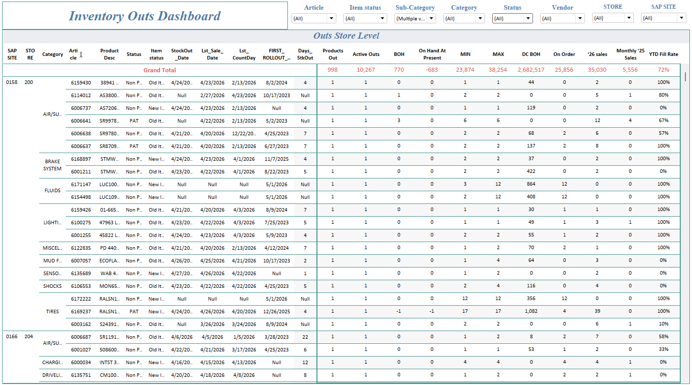
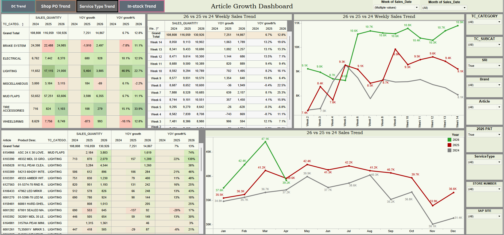
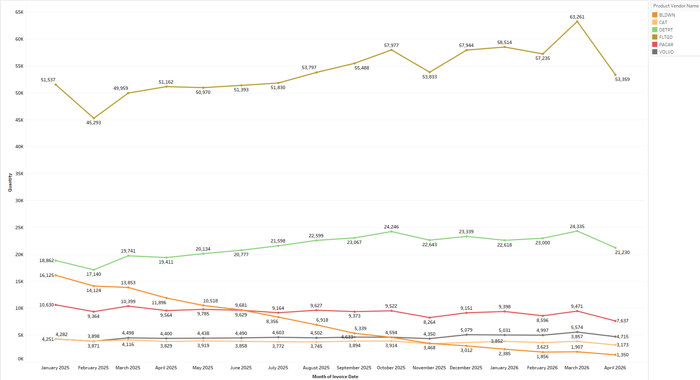
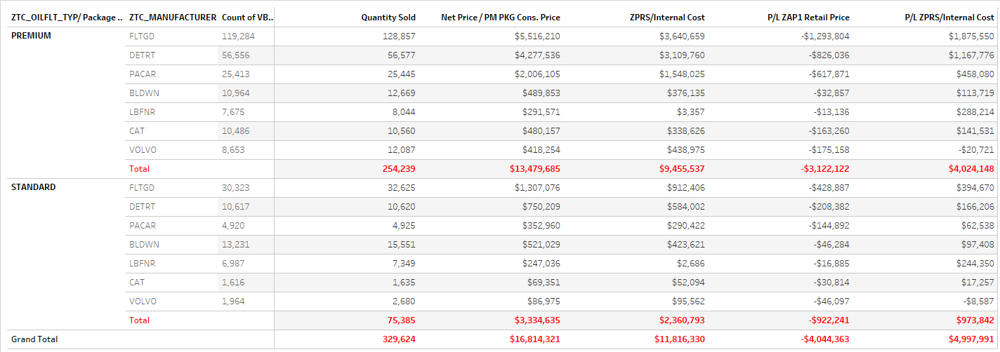
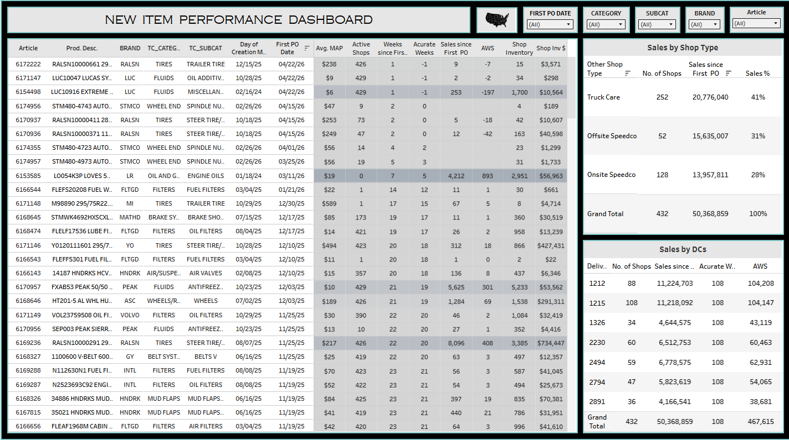
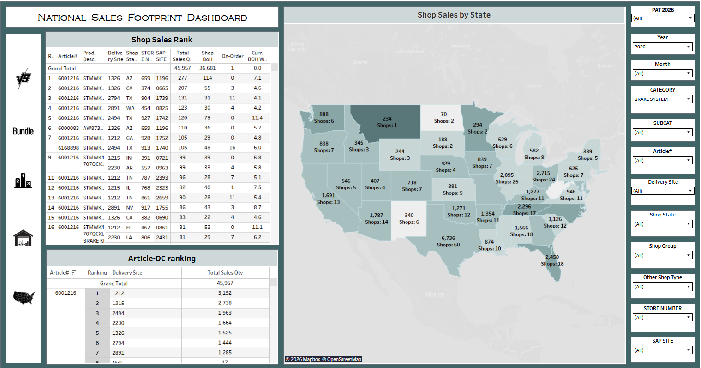
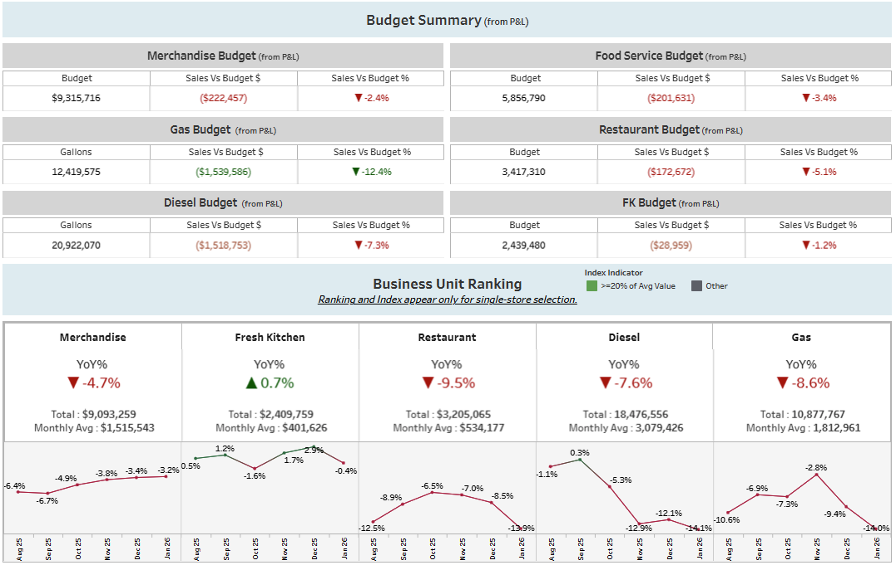

Projects & Dashboard Case Studies
Business Intelligence | Data Analytics | Reporting Automation
A curated portfolio of BI dashboard and analytics case studies focused on KPI design, performance tracking, variance analysis, product movement, inventory visibility, pricing intelligence, sales trends, margin review, and executive-ready reporting.
Built using sample, masked, or recreated business data to demonstrate dashboard structure, metric logic, stakeholder usability, and decision-support insights across operational, financial, and network-level reporting scenarios.
Project Methodology
Business Problem
Define the reporting objective, stakeholder need, KPI scope, and decision the dashboard should support.
Data & Metrics
Validate source data, align metric logic, structure dimensions, and confirm calculation consistency across views.
Dashboard Design
Build visual layouts that highlight trends, exceptions, performance gaps, and actionable business insights.
Stakeholder Use
Deliver reporting that supports operational review, financial analysis, category decisions, and leadership visibility.
Featured Dashboard Portfolio
1. Inventory Availability & Product Performance Analytics

Inventory Outs & Stockout Monitoring Dashboard
Tracks last sale date, stockout date, item status, days since stockout, rollout timing, products out of stock, and on-order visibility at store and product level.

Article Performance & Sales Trend Dashboard
Analyzes article-level and category-level sales performance across weekly, yearly, and monthly views to identify product movement and trend patterns.
2. Product Mix, Pricing & Profitability Intelligence

Filter Category Trend Analysis
Shows filter category trends using visual analysis to compare product movement, category-level performance, and sales behavior over time.

Package Pricing & Profitability Analysis
Compares internal cost, retail cost, consolidated package pricing, and P/L indicators to support pricing and profitability review.

New Item Rollout, Store Activation & Margin Dashboard
Tracks new item rollout performance across store and DC networks by showing rollout timing, active shop count, average sales per shop, inventory position, sales contribution, and margin visibility. The dashboard helps evaluate item adoption, store activation, and network-level performance after launch.
3. Network Performance & Budget Visibility

National Sales Footprint & Store Performance Dashboard
Visualizes state-level sales, shop count, yearly growth, average sales, and national sales footprint using map-based performance reporting.

Store-Level Budget Summary Dashboard
Summarizes budget performance at store level to compare planned vs. actual performance and support operational and financial review.